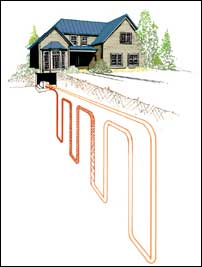

This article talks about magic - the sort of magic that allows you to heat and cool your home with solar energy stored in water, earth or thin air. That’s the essence of heat pump systems. The concept is simple: heat pumps use the Earth as a huge heat source or sink - borrowing heat in the winter and dumping heat in the summer. This exciting option offers long-term cost savings and less dependence on fossil fuels.
Heat pumps have been around since the early 1900s - refrigerators and air conditioners are types of heat pumps - but were not commonplace for residential buildings until the 1970s. Although they have been available for more than 30 years, heat pumps are still not understood by many homeowners.
Heat naturally flows from a warmer area to a cooler area. But with the aid of a compressor and a small amount of electricity, heat pumps can force heat (from water, air or the ground) to flow in the opposite direction. It’s a little like pumping water uphill. When the heat pump process is reversed in the summer, it will move warm air out of your house, eliminating the need for a separate air-conditioning system. And because heat pumps move heat from one place to another rather than create heat through combustion, they are up to four times more efficient than fossil-fueled furnaces.
There are two main types of heat pumps: air-source and ground-source. On the outside, they are unexciting - simple, rectangular, metal boxes with protruding pipes. It’s what’s inside that creates the magic. Here’s how they work:
The heat pump cycle begins as cold liquid refrigerant passes through a heat exchanger and absorbs heat from a natural source such as air, water or the ground. The refrigerant evaporates as the heat is absorbed, becoming a gas. This refrigerant gas then passes through a compressor, where it is pressurized, raising its temperature to more than 160 degrees. The gas then circulates through another heat exchanger, where heat is removed from the gas and transferred to air or water, which is then circulated into your house. (The temperature of the heated air or water is about 100 degrees.) As it loses heat, the refrigerant gas changes back to a liquid. The liquid is further cooled as it passes through an expansion device (which releases the pressure created by the compressor, causing the temperature of the refrigerant to drop), and the heat pump cycle is complete, ready to begin again.
Because a heat pump supplies lower-temperature air than a fossil-fueled furnace, a heat pump tends to run for longer periods of time. For people who are not accustomed to this, it may seem that the heat pump is always running. Yet, a properly designed and installed heat pump will deliver steady heating with less energy consumption than the fossil-fueled competition. For example, a typical air-source heat pump requires just 100 kilowatt-hours (kWh) of electricity to produce the equivalent of 300 kWh of useful home heat. And a ground-source heat pump can be even more efficient. This leads to substantial savings, especially in areas where fossil fuel prices are relatively high and electricity prices are relatively low. Savings are even greater with variable-speed heat pumps. These units adjust their output to match the actual heating or cooling needs of your home, reducing excessive cycling and wear on the system, especially during mild weather.
Admittedly, heat pumps use technology that could be avoided with passive solar design. Passive solar heating, however, does not work well on cold, cloudy, winter days in northern climates. Heat pumps, on the other hand, do not suffer from these shortcomings. They are an intriguing marriage between technology and renewable resources.
Air-source heat pumps deliver on the promise that you can heat and cool your home out of thin air. They are the most popular type of residential heat pump - about 1.8 million units were sold in 2004.
While operating costs for ground-source heat pumps are usually less, air-source heat pumps are the least expensive heat pump to install. They work extremely well in moderate climates, but because they rely on outside air as their heat source, they don’t work as well in areas that have extended periods of subfreezing temperatures.
Air-source heat pumps are well suited to new construction because you can plan in advance for the system’s components. Replacement or add-on systems are also possible in most situations. Air-source heat pumps generally have two main components: an indoor unit and an outdoor unit. The most common type of air-source heat pump is the air-to-air system. In this design, heat is extracted from the air and then moved inside or outside your house. This type of system also can remove a significant amount of dust, pollen and other allergens from indoor air.
Virtually all air-source heat pumps require 200-amp electrical service. While most new homes have 200-amp electrical service or higher, many older homes do not. Upgrading the service can be an expensive project, requiring a professional electrician. And because they need electricity to operate, an air-source heat pump should have some form of backup, especially if it is the primary heat source. Having an electrical generator for backup power is a good strategy to consider.
Correctly sizing an air-source heat pump to match the heating requirements of your home is extremely important. Critical factors include the dimensions of your home, the number of windows and doors, type of insulation and local climate. Installing an oversized unit will result in excess energy consumption, inferior humidity control and shorter equipment life.
Conversely, an undersized heat pump will force your supplemental heat system (if you have one) to operate more, increasing your utility bills. If you want to use your heat pump for cooling, you’ll need cooling load calculations to determine the right capacity. Your contractor should be familiar with methods for determining heating and cooling loads based on data from the American Society of Heating, Refrigerating and Air-conditioning Engineers.
You can easily judge an air-source heat pump’s performance by checking its efficiency ratings. The heating- season performance factor (HSPF) indicates the heating efficiency. The seasonal energy-efficiency ratio (SEER) indicates the cooling efficiency. The best approach is to look for an Energy Star label, which is awarded to units with an HSPF of seven or greater and a SEER of 12 or greater. Any manufacturer that produces Energy Star-rated units is worthy of your consideration.
Noise is another important factor to consider - the outdoor units of some air-source heat pumps are quite loud. All heat pumps have sound ratings in units of bels (the lower the rating, the quieter the unit). If possible, select a heat pump with a rating of 7.6 bels or less.
The outdoor unit should be placed where it is protected from prevailing winter winds, which can intensify frost buildup on the coil that transfers heat. An ideal location is on the south side of your house, shaded by deciduous trees in the summer.uring the winter, sunlight passing through the bare branches helps warm the unit. For the indoor unit, a basement, laundry room, closet, crawl space or attic are all potential locations. The best location is in an easy-to-access spot in the center of the house that allows for more efficient air circulation.
The thermostat settings on a heat pump should remain constant. If you use a more energy-efficient programmable thermostat, the night setting should not be set lower than 65 degrees. This is because a heat pump takes much longer to raise a home’s temperature than a fossil-fueled or wood-heated appliance. Heat pumps are more efficient at maintaining comfortable temperatures but have to work harder to raise temperatures from a cold start.
Heat pumps generally last for about 15 to 20 years. The lifetime of an air-source heat pump tends to be shorter in colder climates than in milder regions because climate affects the total hours of operation. Careful installation and maintenance also have a significant impact on the life of the system. In general, servicing the many components of a heat pump should be left to a trained technician. Have your unit inspected annually - the best time of year is near the end of the cooling season but before the heating season.
But there are some basic maintenance tasks that you can do yourself.irty filters, coils and fans reduce airflow through the system. If neglected, this can damage the compressor. Check the filters monthly and clean or replace them as recommended by the manufacturer’s guidelines. Clean the coils with a vacuum or brush at least once a year (turn off the heat pump first), and check your ducts annually to be sure they are free of excessive dust buildup and other obstructions.
You’ll find a wide variety of air-source heat pumps available through most heating, ventilation and air-conditioning contractors. Ask two or three contractors to estimate the installation cost of the air-source heat pump you are interested in so you can make a comparison.
In most areas, air-source heat pumps are cost-competitive with conventional heating and cooling systems. Air-source heat pumps cost about $500 per ton of capacity, plus installation. A typical well-insulated, 2,000-square-foot home will probably require a 3-ton heat pump. “Ton” is the most common measurement for heat pump size - a 1-ton heat pump can generate 12,000 Btu of cooling per hour at an outdoor temperature of 95 degrees, or 12,000 Btu of heat output per hour at 47 degrees. If you need to install a hot-air distribution system or modify an old one, your installation costs will be higher.itto if you need to upgrade your electrical service. Be sure to ask your utility if rebates are available for energy-efficient heating and cooling equipment.
Since operating costs for a heat pump are normally lower than those for conventional heating appliances, you should save on energy bills. The relative savings, however, will depend on whether you are currently using oil, propane, natural gas or electricity and the prices in your area. When you run a heat pump, you will use less fossil fuels but more electricity (except when compared to electric heating, in which case you’ll definitely use less electricity with a heat pump).
You also can heat your home with earth or water - that’s the magic of ground-source heat pumps. Also known as geothermal or geoexchange, these heat pumps are not as common as their air-source cousins, but they have many advantages. They work well in almost any climate, especially colder areas where air-source heat pumps are not as well-suited. According to the Environmental Protection Agency (EPA), geothermal is the most energy-efficient, environmentally clean and cost-effective space- conditioning system available.
Compared to fossil-fueled systems, geothermal can save you 30 percent to 70 percent in heating costs and 20 percent to 50 percent in cooling costs. The Earth is a huge energy storage device that absorbs 47 percent of the solar energy that strikes its surface. A geothermal heat pump uses the earth, groundwater or surface water as sources of heat in the winter and as a sink for heat removed from your home during the summer. Heat is extracted from the earth by a liquid, such as water or antifreeze. The heat pump then amplifies this heat and transfers it into your house. Reverse the process, and the system provides cooling. Ground-source heat pumps also can filter air and control humidity.
Geothermal systems consist of three main components: a system of outdoor underground piping, a heat pump and a distribution system. Geothermal systems are best suited to new construction and are more expensive and complicated to install than their air-source counterparts. In a renovation, installing the necessary underground piping can be a challenge. The contractor will have to avoid disturbing existing water, sewer and underground utility lines. And as with air-source heat pumps, ground-source systems require 200-amp electrical service.
The two types of geothermal systems are open- and closed-loop. An open system uses the heat in a body of water (usually a well but sometimes a pond or stream) as its heat source. The water is pumped from the well or other source to the primary heat exchanger in the heat pump, where heat is extracted. After the heat has been extracted, the water is discharged back into the pond, stream or well. Regardless of the disposal method, no pollutants are added - the only result is a slight change in temperature. In a closed-loop system, however, heat from the ground is collected by a continuous loop of underground piping that contains an environmentally safe antifreeze solution that absorbs heat from the surrounding soil. The antifreeze solution is then drawn into the heat exchanger, and heat is extracted.
In locations where groundwater is plentiful, an open-system heat pump design may be your most efficient option. The amount of water required in an open system depends on the size of heat pump, but generally ranges between 5 and 12 gallons per minute when the heat pump is operating. It’s important that the well is capable of producing more than this amount on a steady basis, especially if you use the same well for domestic water.
Poor water quality can cause serious problems in open systems.on’t use water that contains excessive particles of organic matter, which can quickly clog a heat pump. Have the water tested for acidity, hardness and iron before installation. Your contractor or the equipment manufacturer can tell you what standard of water quality is acceptable. Local zoning or environmental regulations may prohibit open-loop systems - check with your local officials early in the planning process.
In locations where groundwater is not available in sufficient quantities, a closed-loop design may be a better option. Closed-loop systems are subdivided into two categories: vertical and horizontal. In locations with limited yard space, a vertical loop may be the best design. U-shaped loops of special piping are inserted into 6-inch-diameter holes that have been bored 60 to 200 feet deep. The length of the loop depends on your home’s heating and cooling loads, soil conditions, climate and landscaping. For every ton of heat pump capacity, 270 to 350 feet of piping is required. Vertical loops are generally more expensive to install than horizontal loops. In locations with abundant yard space, the horizontal-loop design is more popular. In this strategy, the piping is placed in trenches that are 3 to 6 feet deep. For every ton of heat pump capacity, you’ll need 400 to 600 feet of piping.
Regardless of the design, the piping must be made from a tough, special polyethylene plastic with fused (rather than glued or clamped) joints to ensure they won’t leak. Properly installed piping that meets these specifications should last from 25 to 50 years.
When installation is finished, the backfill material should be carefully tamped to ensure good heat transfer. After installation, plant sod or grass seed to restore the trenches. The output temperature of a ground-source system does not vary significantly from winter to summer because its heat source remains fairly constant year-round. This allows a ground-source heat pump to provide most of the heat required for your home, often with enough extra capacity to provide hot water.
Air-source Heat pumps
The following companies make Energy Star-rated air-source heat pumps:
Amana
(877) 254-4729
www.amana-hac.com
American Standard
www.americanstandardair.com
Armstrong Air
www.armstrongair.com
Bryant
(888) 999-2792
www.bryant.com
Carrier
(800) 227-7437
www.carrier.com
Freus
(505) 589-5431
www.freus.com
Goettl Air Conditioning
(602) 275-1515
www.goettl.com/air
Goodman
(888) 593-9988
www.goodmanmfg.com
Lennox
(800) 953-6669
www.lennox.com
Nordyne
www.nordyne.com
Nyle Special Products
(207) 942-2865
www.nyletherm.com
Rheem/Ruud
(479) 648-4900
www.rheemac.com
www.ruudac.com
Tempstar
www.tempstar.com
The same criteria for sizing air-source heat pumps apply to ground-source heat systems. A well-insulated, 2,000-square-foot home will probably require a 3-ton heat pump. The actual size of your system should be within 15 percent of the calculated load. If you are planning to use your geothermal system for cooling, you will also need cooling-load calculations. Your contractor should be able to perform all of these calculations for you.
Your primary consideration in selecting a ground-source heat pump should be performance. The heating efficiency of ground-source heat pumps is indicated by their coefficient of performance (COP). Their cooling efficiency is indicated by the energy- efficiency ratio (EER). Look for the Energy Star label, which indicates a COP of 2.8 or greater and an EER of 13 or greater. Also look for equipment that is certified by the Air-conditioning and Refrigeration Institute.
Unlike air-source heat pumps, noise is not an issue with ground-source units - they are so quiet that many homeowners don’t realize they are running. Install the heat pump where there is sufficient space to work on the equipment, perhaps in a utility room, basement or crawl space. The best location is one that is an easy-to-access spot nearest to the center of the house.
Ground-source heat pumps require slightly less maintenance than air-source systems. Nevertheless, as with any heat pump, routine preventive maintenance is important. A dirty filter, coil or fan will reduce airflow through the system, which can damage the compressor over time. In an open system, mineral deposits can build up inside the heat exchanger. A service technician can clear away the deposits by using a mild acid solution.
Ground-source heat pumps have lifetimes of about 20 to 25 years. They last slightly longer than air-source units because the compressor is located indoors, where it is subjected to less stress. Some heating, ventilation and air-conditioning contractors offer ground-source heat pumps. Because geothermal systems require careful design and installation of the underground piping and the heat pump itself, contractors who specialize in these systems are your best choice, especially those who are certified by the International Ground Source Heat Pump Association (IGSHPA). Seek estimates from two or three contractors and compare costs. Some heat pump installers are not as familiar with ground-source systems as they are with air-source systems, so choose a contractor carefully.
The price of a geothermal system can vary greatly due to a wide range of site-specific factors. As a general rule of thumb, the cost of one of these systems can run from $7,500 to more than $15,000, with open systems generally less expensive than closed-loop systems. The IGSHPA estimates an average system will cost about $2,500 per ton of unit capacity, not including modifications to your home that might be necessary. The total installed cost of a complete geothermal system can be twice that of a fossil-fueled heating and cooling system. At these prices, be sure to ask your utility if rebates are available for energy-efficient heating and cooling equipment. (Your utility also might have a list of local dealers and contractors.)
On the flip side, a recent EPA study showed that geothermal heat pumps have the lowest lifetime cost of all conventional home-heating systems available. So if you are able to get past the initial installation expense, you will save money in the long run. The study also showed that geothermal systems have the lowest impact on the environment when compared to fossil-fueled systems.
The type of heat pump magic that’s right for you - air, earth or water - largely depends on your climate. If you live in a moderate climate zone, consider an air-source heat pump. If your winters have consistent subfreezing temperatures, a geothermal system might be your best bet. Assuming the project looks logistically feasible, find local contractors experienced with heat pumps, ask questions and get several cost estimates. Crunch the numbers and decide if it will be a good long-term investment. Even if the numbers don’t add up, you might decide to go ahead anyway because you want to minimize your dependence on ever-more expensive fossil fuels by tapping free solar energy instead.
Adapted from Natural Home Heating (Chelsea Green Publishing) by Greg Pahl, which contains more information about heat pumps and other energy-efficient and environmentally friendly ways to heat your home.
Air-conditioning and
Refrigeration Institute
(703) 524-8800
www.ari.org
Energy Savers program
(877) 337-3463
www.energysavers.gov
Energy Star program
(888) 782-7937
www.energystar.gov
Geothermal Heat Pump Consortium
(410) 953-7150
www.geoexchange.org
Geothermal Resources Council
(530) 758-2360
www.geothermal.org
International Ground Source
Heat Pump Association
(800) 626-4747
www.igshpa.okstate.edu
Ground-source Heat pumps
The following companies make Energy Star-rated geothermal systems:
American Geothermal
(800) 776-8039
www.amgeo.com
ClimateMaster
(405) 745-6000
www.climatemaster.com
ECONAR
(800) 432-6627
www.econar.com
ECR Technologies
(866) 211-6102
www.ecrtech.com
FHP Manufacturing
www.fhp-mfg.com
Hydron Module
(800) 444-8583
www.hydronmodule.com
Trane
www.trane.com
WaterFurnace
www.waterfurnace.com
|
 This graphic illustrates basic heat pump operation (starting at the evaporator and moving counterclockwise). |
A typical air-source heat pump design set for winter operation. |
In locations with plentiful groundwater, an open geothermal system is the simplest toinstall. |
|
Closed-loop geothermal systems can be either horizontal-loop (above) or vertical- oop. |
|
|